DriveZero: End-to-End Driving Beyond Human Demonstrations

A camera-only end-to-end driving policy that learns without any human trajectory supervision, yet surpasses the human driver on NAVSIM and sets the state of the art on NAVSIMv2 and HUGSIM.
The DriveZero System
DriveZero decomposes driving into an action model and a perception model, pretrains each in the regime best suited to it, and unifies them by distillation.
- DriveRL, the action model, learns to drive from scratch with closed-loop RL. It converts real nuPlan logs into mixed-agent interactive worlds, where each background actor receives its own behavior provider, so that log replay, rule-based behaviors, and learned policies coexist within one scene. In these worlds, a 5.7M-parameter privileged policy is trained with PPO.
- DriveVFM, the perception model, learns from massive raw images by distilling frozen vision foundation models. It consolidates DINOv3, SigLIP2, SAM, and Depth Anything V2 into a single driving backbone, with no task labels.
- DriveZero unifies the two. It encodes multi-view images with DriveVFM, decodes trajectory proposals, and learns them from DriveRL rollouts instead of human trajectories, including rollouts under augmented goals that the human log never contained.
Results
DriveRL exceeds the log-replay expert on all six nuPlan closed-loop settings. DriveZero, trained only on DriveRL rollouts, surpasses the human driver on NAVSIMv1 and leads NAVSIMv2 and the true closed-loop HUGSIM benchmark.
Orange: ours, no human trajectory supervision. Gray: prior methods. nuPlan is the mean over Val14, Test14-hard, and Test14-random in non-reactive and reactive modes; selected methods reported on all six are shown. NAVSIM and HUGSIM baselines are camera-only.
DriveRL
Closed-loop RL in log-initialized worlds. The learned policy surpasses the logs that seed it.
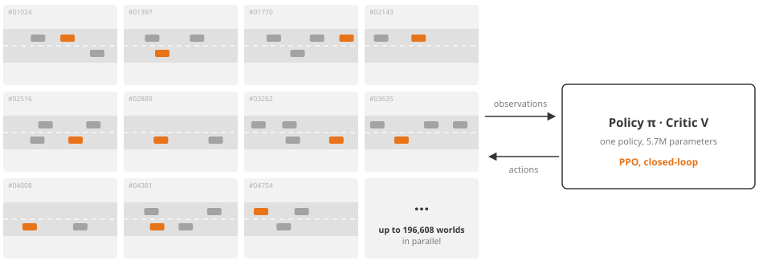
Mixed-agent worlds
Each background actor gets its own behavior provider. The same scene under log replay, IDM, and self-play.
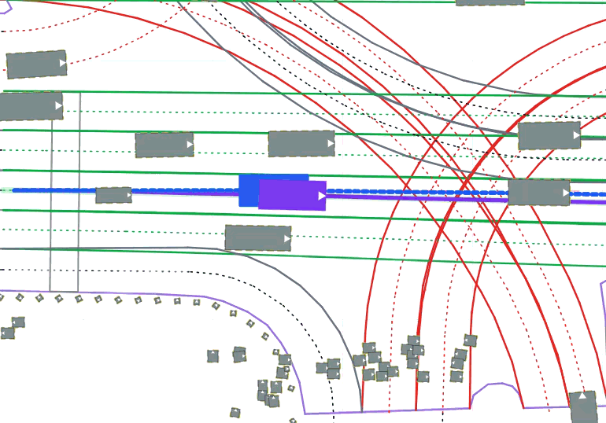
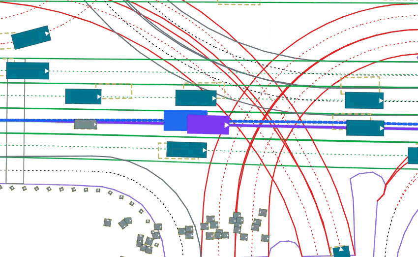
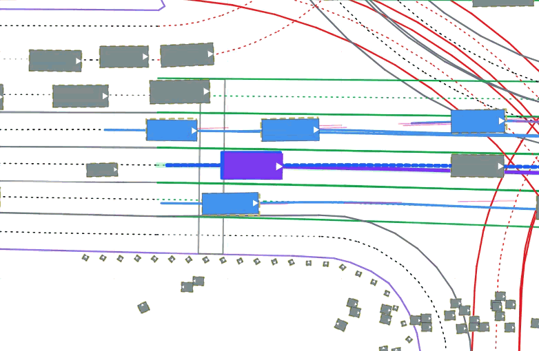
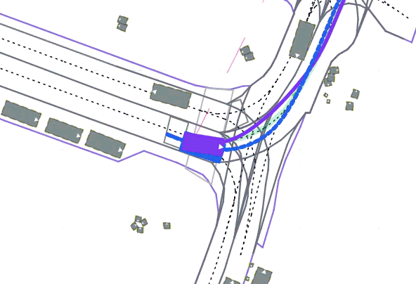
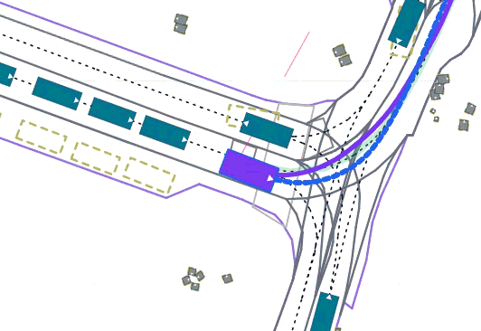
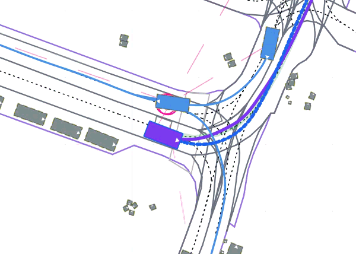
Goal augmentation
The teacher is goal-conditioned, so one scene yields multiple goal-consistent trajectories beyond the single human future.
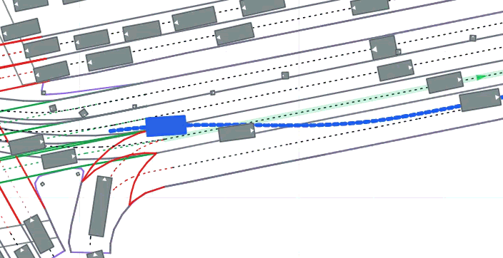
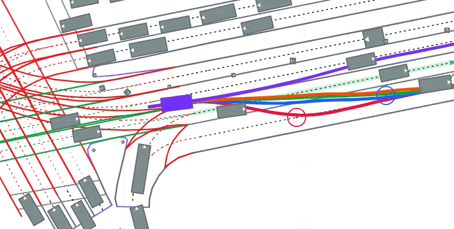
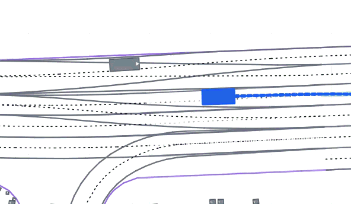
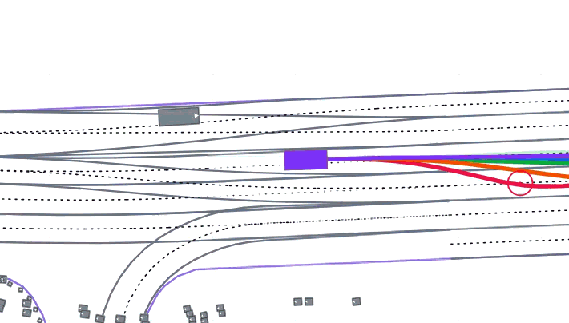
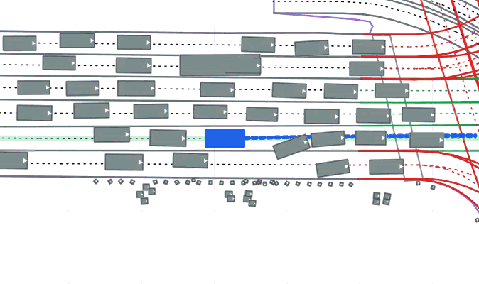
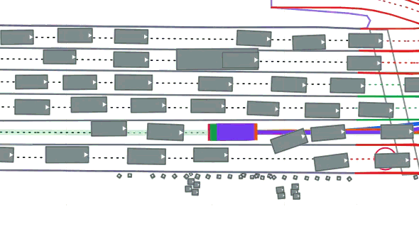
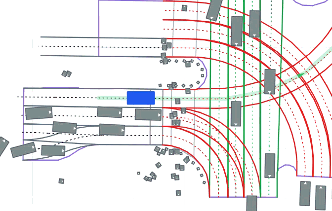
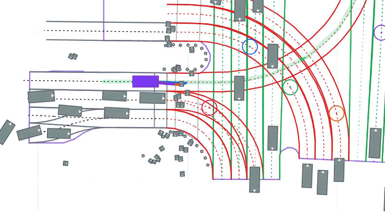
Real-world deployment
DriveRL deployed on a small fleet and validated in real traffic. It is trained on our own driving logs with self-play enabled; the logs only seed the scenes and goals, and no human demonstration is used. Onboard detection, online mapping and navigation provide the structured state. Here DriveRL controls the vehicle in closed loop on a crowded urban road with dense traffic.
Value-guided test-time search
Sample several actions, roll them out briefly, and keep a higher-value candidate when the critic prefers it.
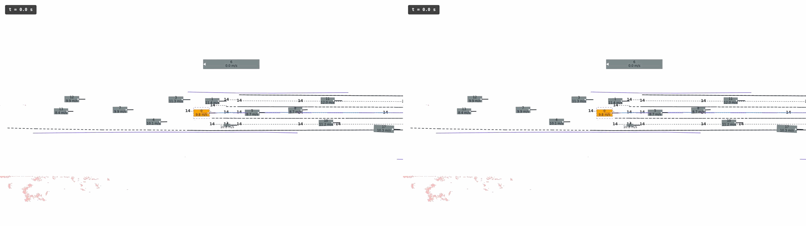
DriveVFM
One driving backbone distilled from four frozen vision foundation models: DINOv3 for spatial structure, SigLIP2 for semantics, SAM for boundaries, Depth Anything V2 for geometry. No detection, lane, segmentation, or depth labels; trained on web-scale images mixed with driving scenes.
Feature visualization
PCA of DriveVFM patch features on driving scenes.
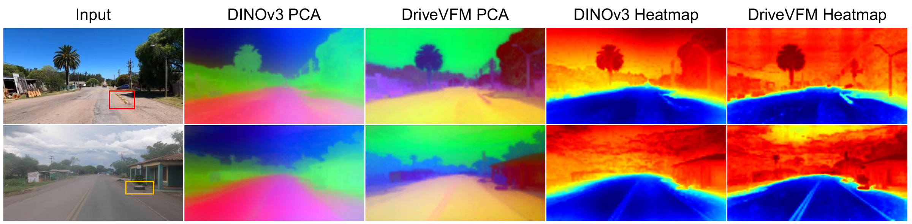
DriveZero
A camera-only planner distilled from DriveRL, evaluated zero-shot in true closed loop on HUGSIM.
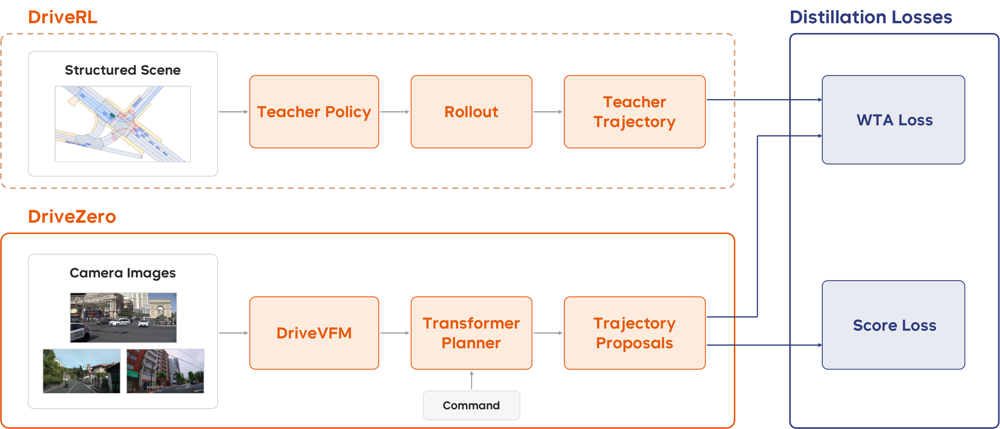
Planning visualizations
DriveZero-Scale vs. the previous state of the art on NAVSIM and HUGSIM.
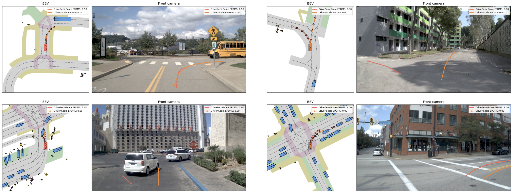
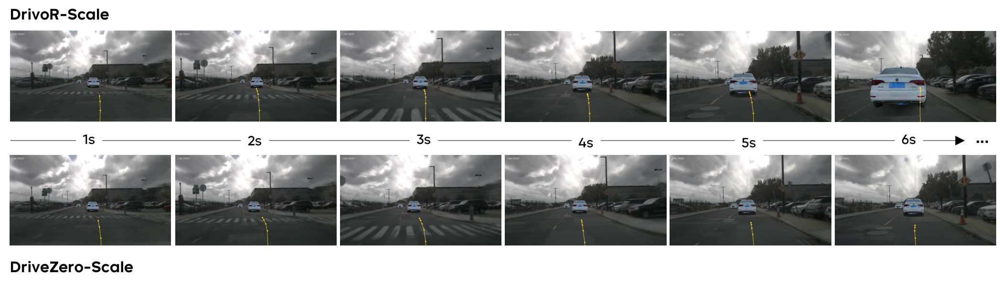
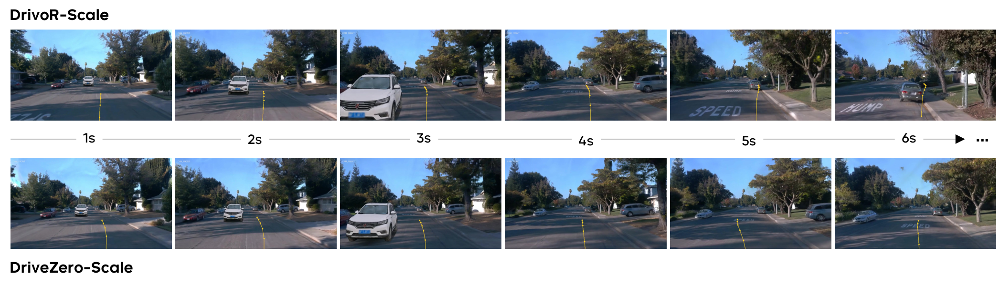
HUGSIM closed-loop comparison
DrivoR-Scale (previous state of the art) vs. DriveZero-Scale on the same scenes.
Contributors
- DriveRL
- Hao He, Chengcheng Hu, Zirun Su, Heng Zhang
- DriveVFM
- Haisong Liu
- DriveZero
- Haisong Liu*, Jinke Li*, Haochen Tian*, Zhenwei Shen, Hongyang Li
- Real-World Deployment
- Hao He, Zhichao Li, Yunchen Yang, Bochao Huang, Siyu Zhang, Kuangye Chen, Heng Zhang, Xiongjie Zhang, Wentao Dai, Hengchen Dai, Siyuan Liu
- Project Lead
- Hao He, Zhichao Li, Zehao Huang, Naiyan Wang
* Equal contribution.
BibTeX
@article{xiaomi2025drivezero,
title={DriveZero: End-to-End Driving Policy beyond Human Demonstrations},
author={Xiaomi L3 Team},
journal={arXiv preprint arXiv:xxx},
year={2026}
}